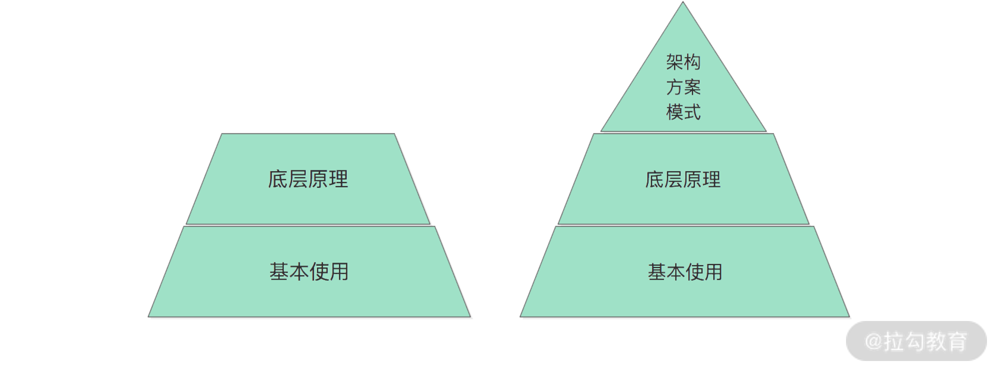

- 00 开篇词 领略 MyBatis 设计思维，突破持久化技术瓶颈.md.html
- 01 常见持久层框架赏析，到底是什么让你选择 MyBatis？.md.html
- 02 订单系统持久层示例分析，20 分钟带你快速上手 MyBatis.md.html
- 03 MyBatis 源码环境搭建及整体架构解析.md.html
- 04 MyBatis 反射工具箱：带你领略不一样的反射设计思路.md.html
- 05 数据库类型体系与 Java 类型体系之间的“爱恨情仇”.md.html
- 06 日志框架千千万，MyBatis 都能兼容的秘密是什么？.md.html
- 07 深入数据源和事务，把握持久化框架的两个关键命脉.md.html
- 08 Mapper 文件与 Java 接口的优雅映射之道.md.html
- 09 基于 MyBatis 缓存分析装饰器模式的最佳实践.md.html
- 10 鸟瞰 MyBatis 初始化，把握 MyBatis 启动流程脉络（上）.md.html
- 11 鸟瞰 MyBatis 初始化，把握 MyBatis 启动流程脉络（下）.md.html
- 12 深入分析动态 SQL 语句解析全流程（上）.md.html
- 13 深入分析动态 SQL 语句解析全流程（下）.md.html
- 14 探究 MyBatis 结果集映射机制背后的秘密（上）.md.html
- 15 探究 MyBatis 结果集映射机制背后的秘密（下）.md.html
- 16 StatementHandler：参数绑定、SQL 执行和结果映射的奠基者.md.html
- 17 Executor 才是执行 SQL 语句的幕后推手（上）.md.html
- 18 Executor 才是执行 SQL 语句的幕后推手（下）.md.html
- 19 深入 MyBatis 内核与业务逻辑的桥梁——接口层.md.html
- 20 插件体系让 MyBatis 世界更加精彩.md.html
- 21 深挖 MyBatis 与 Spring 集成底层原理.md.html
- 22 基于 MyBatis 的衍生框架一览.md.html
- 23 结束语 会使用只能默默“搬砖”，懂原理才能快速晋升.md.html
- 捐赠
00 开篇词 领略 MyBatis 设计思维，突破持久化技术瓶颈
你好，我是杨四正，在接下来的几个月里，我会带你一起来探究 MyBatis 这个 Java 持久化框架。
我曾在电商、新零售、短视频、直播等领域的多家互联网企业任职，这期间我在业务线没日没夜地“搬过砖”，在基础组件部门“造过轮子”，也在架构部门搞过架构设计，参与了公司数据库中间件的设计与开发。目前，我依旧从事基础架构相关的工作，主要负责公司的数据库中间件、Framework、RPC 框架、任务调度等方向的开发和运维工作。
在工作之余，我深入研究过多个开源中间件，因为要负责新员工以及毕业生入职时的数据库中间件培训，所以对 MyBatis 的研究尤为深入。
你为什么要学习 MyBatis
MyBatis 是 Java 生态中非常著名的一款 ORM 框架，也是我们此次课程要介绍的主角。这是一款很值得你学习和研究的 Java 持久化框架。原因主要有两个：
- MyBatis 自身有很多亮点值得你深挖；
- MyBatis 在一线互联网大厂中应用广泛，已经成为你进入大厂的必备技能。
1. MyBatis 自身亮点
结合工作实践来讲，MyBatis 所具备的亮点可总结为如下三个方面。
第一，MyBatis 本身就是一款设计非常精良、架构设计非常清晰的持久层框架，并且 MyBatis 中还使用到了很多经典的设计模式，例如，工厂方法模式、适配器模式、装饰器模式、代理模式等。 在阅读 MyBatis 代码的时候，你也许会惊奇地发现：原来大师设计出来的代码真的是一种艺术。所以，从这个层面来讲，深入研究 MyBatis 原理，甚至阅读它的源码，不仅可以帮助你快速解决工作中遇到的 MyBatis 相关问题，还可以提高你的设计思维。
第二，MyBatis 提供了很多扩展点，例如，MyBatis 的插件机制、对第三方日志框架和第三方数据源的兼容等。 正由于这种可扩展的能力，让 MyBatis 的生命力非常旺盛，这也是很多 Java 开发人员将 MyBatis 作为自己首选 Java 持久化框架的原因之一，反过来促进了 MyBatis 用户的不断壮大。
第三，开发人员使用 MyBatis 上手会非常快，具有很强的易用性和可靠性。这也是 MyBatis 流行的一个很重要的原因。当你具备了 MySQL 和 JDBC 的基础知识之后，学习 MyBatis 的难度远远小于 Hibernate 等持久化框架。
例如，你在 MyBatis 中编写的是原生的 SQL 语句，随着业务发展和变化，SQL 语句也会变得复杂，拆分和优化 SQL 是非常重要的提高系统性能的手段，这个时候你只要了解 SQL 本身的优化即可；而使用 Hibernate、EclipseLink 等框架的时候，还需要了解 HQL、JPQL 以及 Criteria API 生成原生 SQL 的机制。相较之下，MyBatis 会更加容易一些。这一优势对于很多互联网公司和软件企业来说，是非常有诱惑力的，毕竟企业可以在保证软件质量的前提下，快速培养出能够在一线工作的员工。
2. 大家都在用 MyBatis
聊完了 MyBatis 框架本身的一些亮点之后，我们再来看 MyBatis 在实际开发中的使用情况。
首先，从 GitHub 上可以看到，MyBatis 项目目前有 14.6 K 的 Star，以及 9.8 K 的 Fork，国内的很多大厂，例如，阿里、网易、华为等，都会使用到 MyBatis 框架，其热度可见一斑。
那 MyBatis 在很多人都很关心的招聘层面又有怎样的表现呢？下面是国内几家大厂对 Java 开发工作的岗位描述：


（职位信息来源：拉勾网）
作为一名 Java 工程师，深入掌握一款持久化框架已经是一项必备技能，并且成为个人职场竞争力的关键项。拉勾网显示，研发工程师、架构师等高薪岗位，都要求你熟悉并曾经深入使用过某种持久化框架，其中以 MyBatis 居多，“熟悉 MyBatis” 或是“精通 MyBatis” 等字眼更是频繁出现在岗位职责中。
所以说，如果你想要进入一线大厂，能够熟练使用 MyBatis 开发已经是一项非常基本的技能，同时大厂也更希望自己的开发人员深入了解 MyBatis 框架的原理和核心实现。
为什么要研究 MyBatis 的原理
在我工作过程中，除了完成自己的工作任务之外，还要作为导师指导一些工作年限较短或是新入职的同事，在帮助他们解决问题的时候，我发现很多人对 MyBatis 的运行原理并不了解。在基于 MyBatis 进行开发的时候，这些同学就会参考系统中其他人的代码，“照葫芦画瓢”；在运行出现异常或是处理线上故障的时候，也会需要花费大量时间定位问题。比如，我就经常会被同事咨询以下这些问题：
- 我这段代码和别人的代码是一样的啊，为什么我的代码会报 BindingException 啊？
- 我修改了数据库的隔离级别，为什么用 MyBatis 操作数据库的时候，数据库隔离级别没变呢？
- 我实现的 DAO 层，为什么压测的时候响应特别慢呢？有的时候甚至 OOM。但是，MySQL 的响应时间很正常。
- ……
我深入思考了他们遇到的这些痛点问题之后，发现他们都有一个共同的特点：不了解 MyBatis 的底层原理。
另外，结合我自己多年的工作经验来看，如果你跟面试官聊到 MyBatis 的内容，一般来说，面试官大概率不会期待听到“如何搭建 MyBatis 开发环境”“如何写配置文件”或是“如何调用 MyBatis 的API”这些很琐碎的话题。面试官其实更想听的是面试者“对 MyBatis 运行原理的理解”“对 MyBatis 整个框架的把握”“在实践过程中踩到的坑以及如何通过对 MyBatis 的理解解决问题”等话题，这些话题才能体现出个人的技术深度。
从这个角度看，阅读 MyBatis 源码、理解 MyBatis 原理，已经成为你掌握 MyBatis 精髓和提高职场竞争力的关键，也是进入一线大厂的必备技能。
为什么会有这门课
在这样的需求下，反观我们现在能在网络上查找到的资料、视频，基本上都是在介绍 MyBatis 怎么配置、怎么写 SQL 语句、如何定义 Mapper 接口、加哪几个配置文件才能和 Spring 框架集成，等等。
这些资料有用吗？有用，但是只在你真正写代码的时候有用。比如，在写代码的时候，忘记了 MyBatis 如何获取数据库生成的自增主键值，直接通过网络搜索即可找到上述工具类的资料，然后现搬现用。
显然，这些浮光掠影的工具类资料只能辅助你完成日常的基础工作，并且也不能让你在面试过程中脱颖而出。
对于一些“有技术追求”的开发人员来说，这些工具类资料的知识点显然并不能满足他们的学习需求，他们会更关注 MyBatis 原理，会上手搜索一些相关文章。这就碰到另外的问题：资料是否与时俱进以及完整？ 搜索过 MyBatis 源码分析或是原理讲解资料的同学可能知道，从浩如烟海的网络里面筛选出一套相对完整的、适合自己的 MyBatis 原理或源码分析资料，是非常耗时的，甚至还可能根本就搜不到有效信息。
除此之外，还有更让人崩溃的是，有的博主或是讲师写了一篇或几篇源码分析之后，就断更了，毕竟坚持做知识输出还是非常困难的，最后你只能这儿看一篇帖子，那儿看一段视频，然后还得靠自己的经验将碎片化的知识点串联起来，如果经验不足的话，可能串联过程中丢失了某些知识点都意识不到。下面这张对比示意图，就很清晰地说明了通过碎片知识点搭建的知识框架会缺失不少东西：

也可能有些同学会结合这些残缺的“武功秘籍”和 MyBatis 源码这个总纲，自己直接去阅读源码，这不仅是一个痛苦的过程，而且很可能会由于对整个架构的“视野”受限，迷失在代码迷宫中。这就需要你本身具备一定的技术功底，而且要对整个开源项目有比较高的熟练度，还要耐得住性子，花费上一些时间，走上一些弯路，才能完全掌握其核心原理。当然也有可能是更糟糕的结果，花了很大力气去阅读源码，关上 IDEA 之后依然“似懂非懂”，然后就放弃了。
除此之外，按照“总纲+残卷”的模式完成了 MyBatis 的源码分析后，你可能还是会缺少下图展示的“架构、方案、模式”这一部分知识，它是在底层原理基础之上的。对于优秀的开发人员来说，不仅要能看到代码细节处的优秀设计，而且还要能站在更高的角度看整体框架的架构之美，这才是分析一个开源框架最重要的两部分收获。


这门课的核心内容是什么
正是因为深刻了解到很多开发人员在学习过程中可能会碰到资料不全、无人指路、架构经验各不相同等一系列问题，再加上我曾经分享过各种开源项目的源码分析资料，并且收到大家的一致好评，所以我决定和“拉勾教育”合作，开设一个系列课程，根据自己丰富的开源项目分析经验，来带你一起分析 MyBatis 源码、拆解 MyBatis 架构，希望帮你理清 MyBatis 的底层原理、深刻理解 MyBatis 的架构设计。
具体来说，我是从以下四个层面来设计这门课程的。
- 从基础知识开始，通过一个订票系统持久层的 Demo 演示，手把手带你快速上手 MyBatis 的基础使用。之后在此基础上，再带你了解 MyBatis 框架的整体三层架构，并介绍 MyBatis 中各个模块的核心功能，为后面的分析打好基础。
- 带你自底向上剖析 MyBatis 的核心源码实现，深入理解 MyBatis 基础模块的工作原理及核心实现，让你不再停留在简单使用 MyBatis 的阶段，做到知其然，也知其所以然。
- 在介绍源码实现的过程中，还会穿插设计模式的相关知识点，带领你了解设计模式的优秀实践方式，让你深刻体会优秀架构设计的美感。这样在你进行架构设计以及代码编写的时候，就可以真正使用这些设计模式，进而让你的代码扩展性更强、可维护性更好。
- 还会带领你了解 MyBatis 周边的扩展，帮助你打开视野，让你不仅能够学到 MyBatis 本身的原理和设计，还会了解到 MyBatis 与 Spring 集成的底层原理、MyBatis 插件扩展的精髓，以及 MyBatis 衍生生态的魅力。
这里需要说明的是，本课程涉及的 MyBatis 源码以及示例代码，我将会在 GitHub 上随课程推进不断更新，链接是：https://github.com/xxxlxy2008/mybatis。
讲师寄语
架构设计的思想不仅仅是参考优秀的设计，还要不断地实践、纠错、复盘和升华，整个过程是一个闭环，希望你能够用好这个学习方法论，这样在学习时才能起到事半功倍的效果，才能让我们这门课程发挥最大作用。
木盛而本固，水清而源丰，我也希望你在学习过程中善于抓住问题关键，灵活打好每一步的基础。另外，最重要的还是要坚持下来。不积跬步，无以至千里；不积小流，无以成江海。只有瞄准方向，锲而不舍地坚持下来，才能扫除一切学习障碍，才能一步一步成长为“全而深的专家”。
欢迎你订阅我的专栏，让我们一起成为更好的自己，我们一起加油！
© 2019 - 2023 Liangliang Lee. Powered by gin and hexo-theme-book.